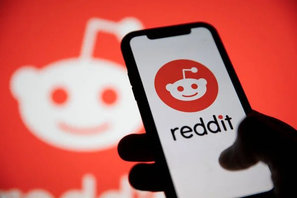
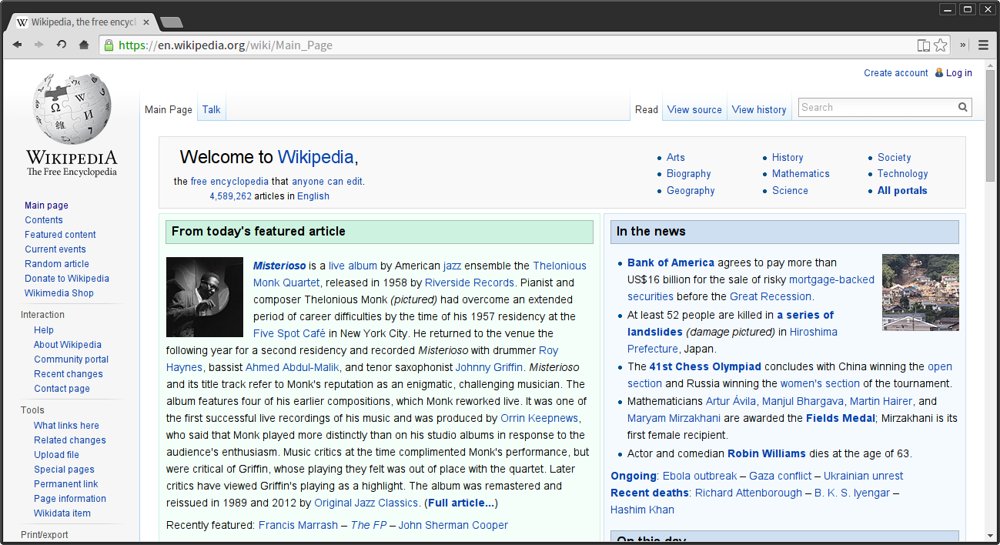
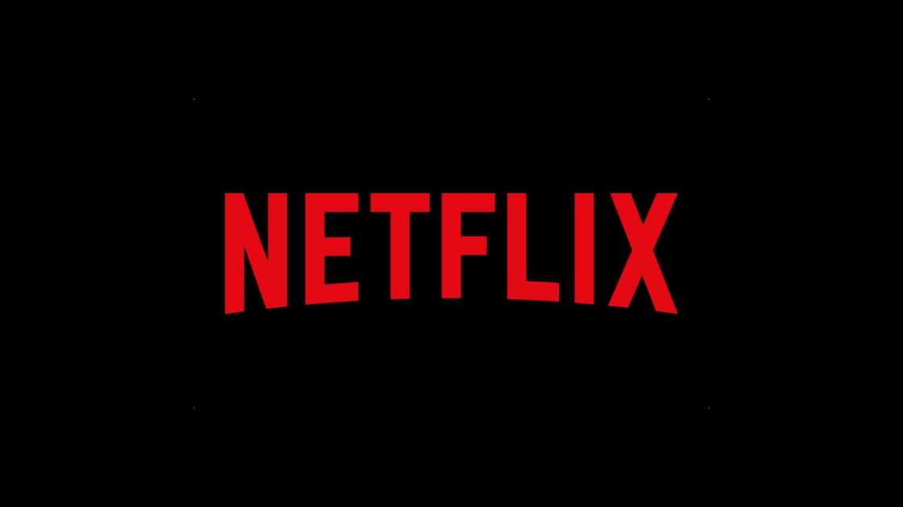
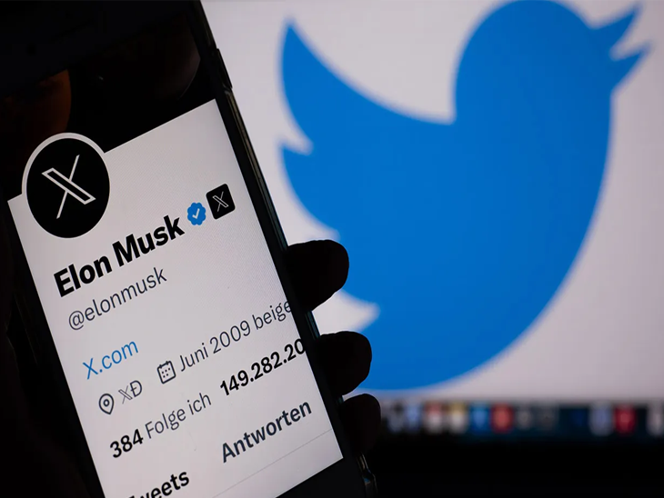

🌐 The Top 5 Coolest Sites on the Internet (and why they still feel like magic)
The internet can feel loud, fragmented, and exhausting—but a handful of platforms still shape how we learn,
think, relax, argue, and express ourselves every single day. These five sites aren’t just popular. They’re
infrastructure for modern life. Here’s why they’re still undeniably cool.
YouTube - The Ultimate Time Sink
YouTube is where curiosity goes to eat. From fixing a leaking tap to understanding quantum physics—or
watching someone silently restore an old watch—everything lives here.
Why it’s cool:
It’s a global stage for creativity, education, and entertainment.
Anyone can teach, anyone can learn.
Visual knowledge beats textbooks.
Culture, skills, entertainment, and education in one place.
It’s not just video. It’s human knowledge in motion.
Reddit - The Front Page of the Internet

Reddit is raw, messy, brilliant, and brutally honest. It’s where people stop performing and start
discussing.
Why it’s cool:
It’s a giant, global conversation with millions of voices.
Communities for every interest, no matter how niche.
It’s where news breaks and trends start.
It’s a place for real talk, memes, and everything in between.
It’s the internet’s pulse, in real-time.
Wikipedia - The Endless Knowledge Repository

Wikipedia is the internet’s collective brain. It’s where we go to understand the world, from A to Z.
Why it’s cool:
It’s a free, open-source encyclopedia built by volunteers worldwide.
It’s constantly updated and evolving.
It’s a starting point for learning about anything.
It’s a testament to human collaboration and knowledge-sharing.
It’s more than facts; it’s context, history, and culture.
Netflix - The Binge-Watching Paradise

Netflix is where we go to escape reality and dive into stories. It’s a global platform for entertainment,
creativity, and storytelling.
Why it’s cool:
It’s a streaming powerhouse with millions of hours of content.
It’s a place where stories are made and shared.
It’s where we watch our favorite shows and discover new ones.
It’s a cultural phenomenon that shapes how we consume media.
It’s a place for comfort, inspiration, and escapism.
Twitter - The Real-Time News and Meme Factory

Twitter is where the internet lives in real-time. It's where news breaks, trends start, and memes are born.
Why it’s cool:
It’s the fastest way to get breaking news.
It’s a place for real-time conversations and debates.
It’s where viral moments begin.
It’s a platform for public discourse and social movements.